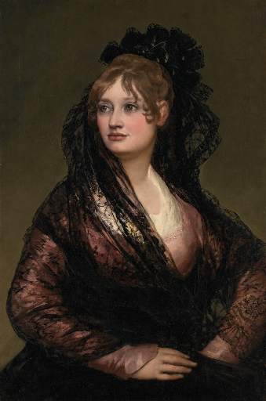

Find the faceYüzü tamamla
Bring the scattered pieces together. Notice the small details that make a portrait feel alive.Dağılmış parçaları bir araya getir. Portreye hayat veren küçük ayrıntıları fark et.
A LITTLE GALLERY IN YOUR POCKETCEBİNDE KÜÇÜK BİR GALERİ
Piece together a face. Reveal the painting behind it. Build a collection, one portrait at a time.Bir yüzün parçalarını birleştir. Ardındaki tabloyu ortaya çıkar. Her portreyle kendi koleksiyonunu oluştur.
Discover the game ↓Oyunu keşfet ↓Coming to iPhone · English & TurkishYakında iPhone’da · Türkçe ve İngilizce

FROM FRAGMENTS TO A WHOLEPARÇALARDAN BÜTÜNE
Bring the scattered pieces together. Notice the small details that make a portrait feel alive.Dağılmış parçaları bir araya getir. Portreye hayat veren küçük ayrıntıları fark et.
Finish the portrait and watch the view open out to the full artwork.Portreyi tamamla; görüntü açılırken eserin tamamıyla tanış.
Explore the calendar and return to the paintings you have completed in your own gallery.Takvimi keşfet, tamamladığın tablolara kendi galerinde yeniden bak.
LET’S MAKE IT BETTERBİRLİKTE GELİŞTİRELİM